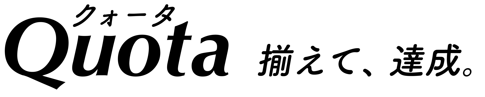
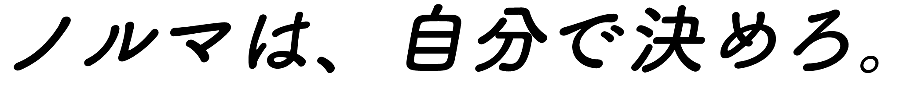

スタートメニュー
プレイヤー名を入力し、インターネット対戦の入口を選びます。


ゲームモード
参加できる卓
募集中の卓から選んでください。
空席は開始時にCPUで埋まります。
募集中 · 2卓
観戦できる卓
卓IDで参加
友人から届いた招待コードまたは
招待リンクを使います。
招待コード
例示用コードです。実際の非公開卓では推測されにくいコードを使います。
参加前の確認
新しい卓を作る
卓のリーダーとして対局条件を選びます。
公開範囲
非公開卓は一覧に出ません。後から公開できます。
ゲーム設定
開始までの時間
卓の作成後、リーダーが「募集開始」を押すと計測が始まります。
ゲーム卓の準備
リーダー：あなた · 3人 / 3ラウンド
友人を招待
招待した人は募集前でも参加できます。
参加プレイヤー · 1 / 3
人間が入室するとCPU予定の枠を置き換えます。指名したCPUも開始までは仮配置です。
CPUプレイヤーの指名
空席に入るCPUを、使いたい順に選びます。
CPUを選択 · 0 / 2
同じキャラクターは2枠に置けません。人間が参加した枠は、開始時にCPUを使用しません。
ゲーム卓のロビー
リーダー：あなた · 3人 / 3ラウンド
開始まで
0秒で開始。あなた一人なら確認を表示します。
参加プレイヤー · 2 / 3
人間が入室するとCPU予定の枠を置き換えます。
ロレンツォの卓
3人 / 3ラウンド · リーダー：ロレンツォ
開始まで
宣言しなくても、0秒になると対局が始まります。
参加プレイヤー · 2 / 3
対戦設定
開始前は「開始可能」宣言後でも自由に抜けられます。
ロレンツォの卓
3人 / 3ラウンド · リーダー：ロレンツォ
開始まで
リーダーが押せば、時間前でも始まります。
参加プレイヤー · 2 / 3
開始前に条件が変わると、開始可能の宣言は取り消されます。
ゲーム卓のロビー
リーダー：あなた · 3人 / 3ラウンド
開始まで
全員が開始可能です。今すぐ開始できます。
参加プレイヤー · 2 / 3
3人目が今から入室した場合、その人も開始可能の宣言が必要です。
ゲーム卓のロビー
開始まで
開始までの時間が終了
ほかの人間プレイヤーは参加していません。どうしますか？
再延長は1回まで · 30秒間操作がなければ卓を閉じます
進行中の卓があります
通信が切れた後も、あなたの席は残っています。
通信断はEXITとして扱われません。復帰すると、元の席で次の手番から操作できます。
対局中の明示的EXIT後は、60秒間、新しいインターネット卓へプレイヤーとして参加できません。